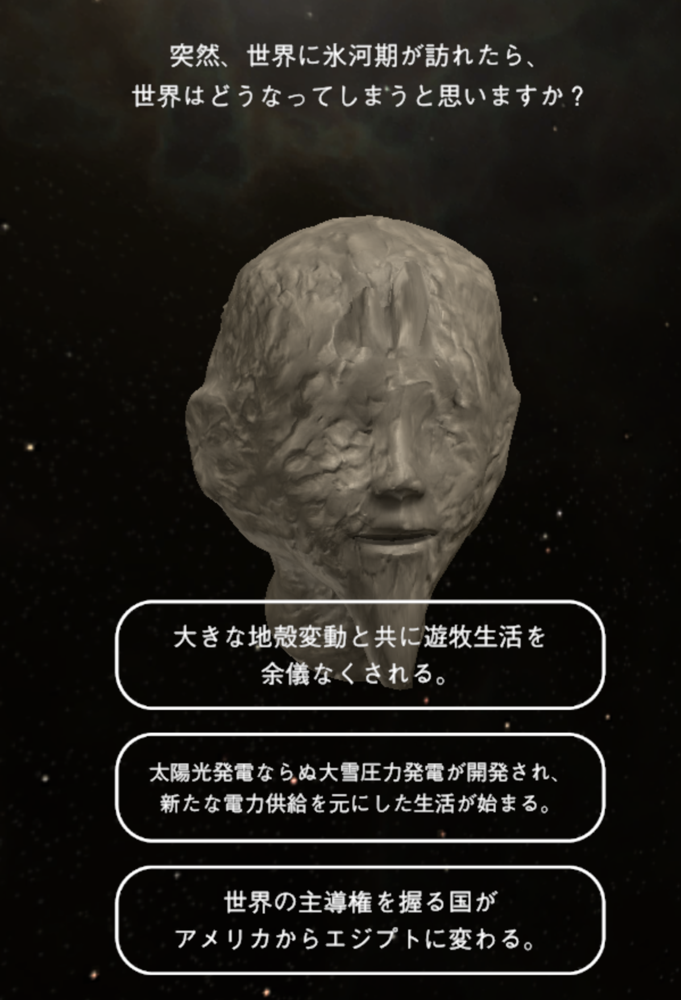
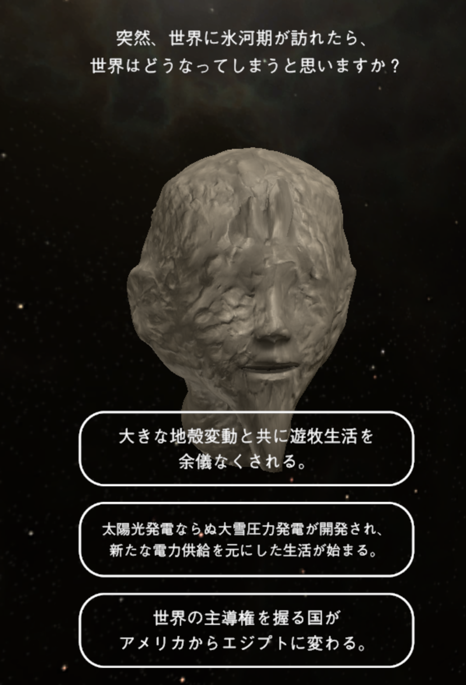

The Future of Digital Sculpture: A Response
Technology is always changing, but as digital sculptures gain more relevance, where do we go from here?
By Matt Toups
I don't know what future web 3.0 holds for society, but with an unknown new technology that may change the way we interact with media online, digital sculptures, and various other 3D works may gain an increased relevancy on the web, rather than just through video games and other forms of media. Digital Sculpture and other 3D renderings have traditionally been reduced to just images when played on the web, with only very few websites opting to let you enter 3D environments through website interfacing. With an increased power online, artists will be able to create new ways to interact with art, and with the new forms of commercialization of digital art with concepts such as NFTs, digital art might gain more legitimacy in the general populace for financial gain, allowing artists to make a better living.
My own feelings on NFTs are that of something negative, with the entire concept being fairly redundant, simply put as the internet has already created digital items that you can own, from the existence of CS:GO skins selling for thousands back in 2012, with unique items users can trade in online markets. Reinventing the wheel is stupid, and is just a work of businesses trying to rebrand and exploit concepts that already existed long before them, but NFTs do represent a wasted potential that might be more useful with the coming of Web 3.0 as art can start becoming more interactive and generative as technology increases. Digital Sculpture can really go beyond just an imitation of physical sculptures, and become something ever changing. Reactive to the environment, perhaps NFTs can go from being used as a static art piece or just a basic ticket to a physical event to having digital value, letting you perform certain actions, or with a more VR based web, allow you to actually wear an NFT in said environment.
I think the importance of 3D art can only go up from here. I recently visited the Mori Art Museum in Tokyo last month, which featured a specific digital sculpture installation that I feel represents a part of the future we envision with websites that interact with multiple computers to share information. Through the use of the website the-planet-of-faces.com, users are able to take a personality quiz that reveals their personal "mask", a digital sculpture, and insert themselves into a shared environment at the museum in which everyone's faces will then interact with each other through generative AI. A sculpture would not be able to be ever changing and interact with a viewer, but a digital sculpture forces us to re-evaluate what is possible for art, and find new forms of innovation.
 
